De cada 100 cânceres de testículo, 95 são tumores de células germinativas. O resto é tão raro na vida quanto na prova — por isso, quando o enunciado falar em câncer de testículo, pense germinativo e siga em frente.
Câncer de testículo: o tumor do homem jovem
A regra dos 95%: quase tudo é tumor de célula germinativa
O câncer de testículo é um assunto vasto na vida e estreito na prova: as questões caem parecidas e diretas. O ponto de partida é a histologia geral. A grande maioria — 95% dos casos — é tumor de células germinativas. Existem, sim, os não-germinativos: tumores linfoides, neoplasias de cordão sexual (estromais), tumores hematopoiéticos, tumores de ducto coletor. Mas são raríssimos na vida e raríssimos na prova. Vale saber que existem para um eventual verdadeiro-ou-falso no histopatológico de um paciente já operado — nada além disso. Para tudo que importa: células germinativas.
Cem cânceres de testículo, empilhados. O bloco teal são os 95% germinativos — o que importa. A faixa fina no topo são os 5% raros, partidos nos quatro tipos. Clique, toque ou foque cada bloco.
Clique numa faixa
O bloco teal é a resposta de prova; as quatro fatias coral no topo são os raros que só servem a um verdadeiro-ou-falso. Toque cada um para ver o porquê.
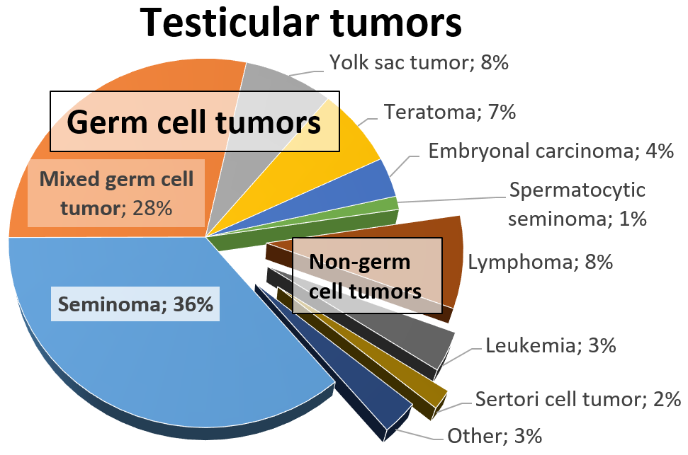
Achado: gráfico de distribuição por tipo histológico — a fatia germinativa (seminoma + misto + saco vitelínico + teratoma + embrionário) domina o disco e empurra para a margem os não-germinativos (linfoma, leucemia, Sertoli). Repare na desproporção: é a tradução visual da regra dos 95% germinativos, e o motivo de a banca quase nunca cobrar os raros como diagnóstico principal.
Mikael Häggström, M.D., via Wikimedia Commons. CC0 (domínio público). Ver fonte.
A faixa etária que entrega o diagnóstico
O segundo dado que o enunciado sempre entrega é a idade. Homem, com pico de incidência entre 20 e 40 anos. Mais que isso: nessa faixa, é a neoplasia sólida maligna mais comum. Repare no contraste — a hiperplasia prostática benigna e o câncer de próstata são doenças do homem acima dos 60; o tumor de testículo é do jovem. Pode aparecer mais cedo? Entre 15 e 19 anos ele já é o segundo tumor mais comum, perdendo só para as leucemias. Mas o cenário clássico de prova planta o paciente entre 20 e 40. Guarde essa âncora: idade jovem + as pistas das próximas linhas e a luz vermelha já acende.
Quiz — fixação
Sobre a histologia do câncer de testículo, qual afirmativa está correta?
Gabarito: B. 95% dos cânceres de testículo são tumores de células germinativas — é o número que ancora todo o tema. A (cordão sexual/estromal), C (linfoide) e D (ducto coletor) existem, mas todos entram na fatia minoritária dos não-germinativos, raros na vida e na prova. Marcar qualquer um deles é inverter a proporção.
Por que cair na C: o linfoma testicular é lembrado em idosos e em provas de hematologia, mas no jovem o protagonista absoluto é o germinativo. Por que cair em A/D: "cordão sexual" e "ducto coletor" soam eruditos e seduzem quem decora nomes sem hierarquizar frequência — são exatamente os raros.
O câncer de testículo é mais comum em homens acima dos 60 anos, à semelhança do câncer de próstata.
Falso. É o oposto: o pico é entre 20 e 40 anos, e nessa faixa é a neoplasia sólida maligna mais comum do homem. A próstata (e a HPB) é que são doenças do idoso, acima dos 60. Transferir a epidemiologia da próstata para o testículo é errar a faixa que a banca usa como gatilho.
Por que o "Verdadeiro" engana: quem agrupa "doença urológica masculina" num bloco só assume que tudo acomete idoso. Mas o testículo quebra esse padrão — é justamente o tumor do jovem, e essa exceção é o que a prova cobra.
Página 2 / 12
Criptorquidia 4–6×Contralateral até 2×Família: irmão > pai
4–6×
O testículo que não desceu para a bolsa carrega risco 4 a 6 vezes maior de virar câncer. É o fator de risco mais clássico do enunciado — e quase nunca falta na questão.
Criptorquidia e a hierarquia de risco
O grande fator do enunciado: criptorquidia
O fator de risco soberano é a criptorquidia — o testículo que não desceu de forma natural para a bolsa escrotal e ficou retido, em geral no abdome. Esse testículo criptorquídico tem risco 4 a 6 vezes maior de desenvolver câncer. Clássico, clássico, clássico: homem jovem com história de criptorquidia no enunciado é luz vermelha piscando.
O contralateral também sobe — por isso avalio os dois
E tem um detalhe que a banca adora. Não é só o testículo que não desceu que corre risco. O outro testículo, o que desceu normalmente, também carrega risco maior que a população geral — pode chegar a 2 vezes. Por isso a regra prática vale ouro: na hora de investigar, avalio o testículo suspeito e sempre o contralateral. Avaliar os dois lados não é zelo excessivo — é a associação bilateral cobrando atenção.
A hierarquia familiar e a história pessoal
A história familiar entra em escala. Irmão com câncer de testículo eleva o risco 8 a 12 vezes; pai acometido, 2 a 4 vezes — o irmão pesa mais que o pai. E a história pessoal fecha o quadro: quem já teve câncer de testículo, com ou sem passado de criptorquidia, tem 12 vezes mais risco de desenvolver no contralateral. Some tudo: idade jovem + criptorquidia no enunciado já entrega insumo de sobra para pensar no diagnóstico.
A hierarquia do risco, em degraus. O chão é a população geral (1×). Cada degrau sobe pelo múltiplo do fator. Repare: o irmão pesa mais que o pai. Clique, toque ou foque cada barra.
Clique num degrau
Os degraus teal (contralateral, pai) sobem pouco; os coral (criptorquidia, irmão, tumor prévio) sobem muito. Toque cada barra para ver o múltiplo e a razão prática.
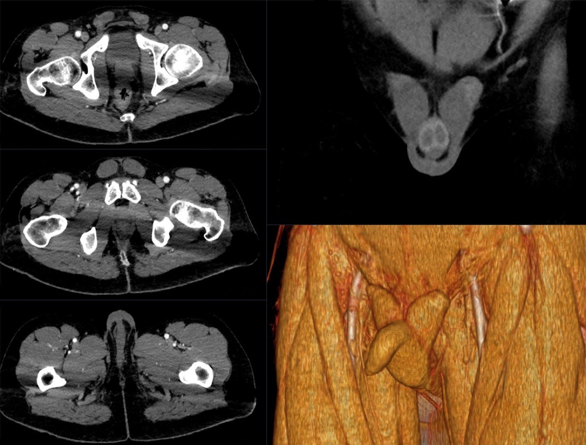
Achado: testículos inguinais bilaterais à TC com contraste, escroto vazio — o fator de risco mais cobrado da aula.
Hellerhoff, via Wikimedia Commons. CC BY-SA 4.0. Ver fonte.
Quiz — fixação
Qual situação confere o MAIOR aumento de risco relativo para câncer de testículo?
Gabarito: B. Entre os fatores familiares, o irmão acometido pesa mais (8–12×) que o pai (2–4×) — a banca gosta de testar essa hierarquia. C (testículo retrátil) não é fator de risco nenhum — é benigno, e cair nele é confundir com criptorquidia. D (tabagismo) é fator do câncer de bexiga, não do testículo; transplantar o vilão errado é armadilha clássica.
Por que cair na A: "pai" parece o parente "mais forte" intuitivamente, mas o número do irmão é maior. Por que cair na D: tabagismo é tão associado a câncer urológico em geral que o aluno o cola em tudo — aqui não há essa associação.
Diante de um tumor em um testículo, basta avaliar o testículo acometido.
Falso. Sempre se avalia também o contralateral: ele carrega risco aumentado (até 2× se já houve criptorquidia, 12× se já houve tumor prévio), e a associação bilateral é frequente. A USG inicial é, por isso, bilateral. Examinar só o lado da queixa é deixar passar um segundo foco já presente.
Por que o "Verdadeiro" engana: parece eficiente focar só no sintomático. Mas o tumor de testículo tem propensão bilateral documentada — economizar o contralateral é justamente o erro que a regra prática proíbe.
Por que, quando o tumor é não-seminomatoso, ele quase nunca aparece com um único tipo histológico?
Os dois subtipos germinativos
Dois ramos do germinativo: seminoma e não-seminoma
Dentro dos tumores de células germinativas há dois grandes subtipos. Os seminomatosos, muito mais comuns, e os não-seminomatosos. Essa divisão importa porque ela muda quais marcadores tumorais o paciente vai expressar — e marcador é o que decide boa parte das questões de diagnóstico.
Por que o não-seminomatoso quase sempre é misto
A pegadinha do não-seminomatoso é que ele dificilmente vem com um subtipo só: é muito comum ser misto, com mais de um componente histológico no mesmo tumor. Carcinoma embrionário junto de coriocarcinoma; teratoma junto de tumor do saco vitelínico. Essas combinações são a regra, não a exceção. Para a prova, basta reconhecer: seminomatoso costuma ser mais "puro"; não-seminomatoso costuma ser misto.
Dois ramos, um deles sempre misturado. O seminoma tende a vir puro; o não-seminoma quase nunca — costuma juntar mais de um componente. Clique, toque ou foque cada nó.
Clique num nó
O ramo teal (seminoma) tende a puro; o ramo coral (não-seminoma) reúne as quatro folhas que se combinam no mesmo tumor. Toque cada uma para entender o "misto".
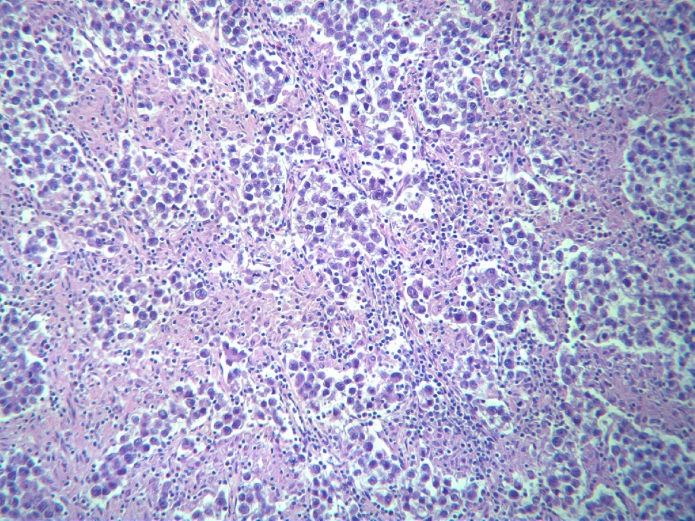
Achado: seminoma clássico em coloração HE — ninhos de células germinativas uniformes de citoplasma claro, separados por septos com infiltrado linfocitário.
Mattopaedia, via Wikimedia Commons. CC BY-SA 3.0. Ver fonte.
Quiz — fixação
Sobre os tumores germinativos não-seminomatosos, é correto afirmar:
Gabarito: B. A marca do não-seminomatoso é ser misto — carcinoma embrionário, coriocarcinoma, teratoma e saco vitelínico se combinam no mesmo tumor. A está invertida (os seminomatosos é que são mais comuns). C é o oposto: o não-seminomatoso é justamente o que mais expressa AFP e β-hCG. D troca os papéis — quem tende a "puro" é o seminoma.
Por que cair na A: o aluno confunde "mais cobrado/falado" com "mais frequente"; o seminoma é o comum. Por que cair na D: "não-seminomatoso" soa como categoria única e pura, quando é o contrário — é o ramo dos misturados.
O subtipo seminomatoso é o mais comum entre os tumores de células germinativas.
Verdadeiro. O seminoma é o subtipo germinativo mais comum, e tende a se apresentar de forma mais homogênea. O não-seminomatoso é menos frequente e, quando ocorre, costuma ser misto. Inverter isso é o erro de quem associa "nome mais elaborado" a "mais frequente".
Por que o "Falso" engana: o não-seminomatoso ganha mais atenção por causa dos marcadores (AFP), o que dá a falsa impressão de protagonismo epidemiológico — mas em frequência quem domina é o seminoma.
Página 4 / 12
IndolorEndurecida · bem delimitadaGinecomastia ~2%
Caso de abertura
Homem de 24 anos. No banho, percebe um caroço no testículo. Não dói. Acha que é da pancada que levou no futebol há uns 40 dias. Demora a procurar o médico. Quando procura, o urologista palpa uma massa endurecida, bem delimitada, que não dói. Guarde esse paciente — cada detalhe dele é gabarito.
A massa testicular indolor
O achado-mãe: massa endurecida e indolor
Some idade jovem, criptorquidia e a clínica certa e, em prova, acabou: é câncer de testículo, praticamente 100% das vezes. E a clínica central tem nome único — massa testicular indolor. O paciente costuma achar sozinho, tomando banho, ou um parceiro percebe durante o ato sexual; às vezes ele liga a um trauma antigo ("uma pancada no futebol há 40 dias"). Esse intervalo de semanas é proposital no enunciado: já passou tempo suficiente para afastar causas agudas. Ao exame bimanual, a massa é endurecida, muito bem delimitada e absolutamente indolor. Pode doer na vida real (infarto intratumoral, sangramento com compressão), mas dor não cai na prova — seria pegadinha maldosa demais frente aos diferenciais.
Os sinais que acompanham (hidrocele, peso, ginecomastia)
Em volta da massa, alguns achados secundários. Se o tumor cresce muito, pode surgir hidrocele associada, ou um peso/desconforto escrotal — sinais menos específicos. E há um achado elegante que a banca às vezes planta: a ginecomastia, presente em cerca de 2% dos casos, consequência do β-hCG produzido pelo tumor. Homem de 20–40 anos, criptorquidia, massa indolor e ginecomastia — esse conjunto fecha o raciocínio. Já dor abdominal ou lombar é raríssima no início e fala de metástase; a metástase ao diagnóstico aparece em 10–15% dos casos (até 30% em algumas séries), mas não é o cenário clássico.
A massa que se acha no banho. Endurecida, bem delimitada e — o detalhe que define tudo — indolor. Em volta dela, os sinais que acompanham. Clique, toque ou foque cada achado.
Clique num achado
A massa central (endurecida, indolor) é o que fecha o diagnóstico; o halo e a ginecomastia são os sinais que acompanham. Toque cada um para o detalhe.
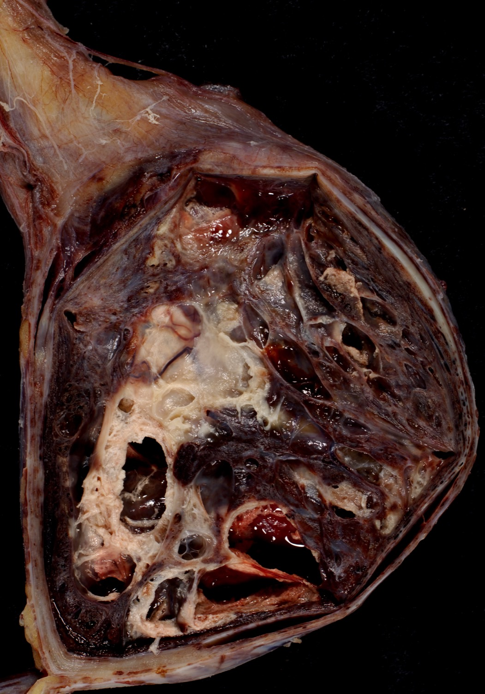
Achado: tumor de células germinativas misto — massa testicular sólida volumosa que substitui o parênquima, em homem jovem que conviveu meses com a lesão.
Case courtesy of Ed Uthman, MD, via Wikimedia Commons. CC BY 2.0. Ver fonte.
Quiz — fixação
A apresentação clínica clássica do câncer de testículo em prova é:
Gabarito: B. A marca registrada é a massa indolor, endurecida e bem delimitada, achada no banho ou pelo parceiro. A (dor aguda) é torção; C (disúria/febre) e D (escroto doloroso e quente) são orquiepididimite. A banca usa a dor justamente para te tirar do câncer — se dói, na prova, pense em outra coisa.
Por que cair na A: "testículo + algo errado" dispara o reflexo de torção, que é emergência e marcante; mas torção dói muito, e o tumor não dói. Por que cair em C/D: quadro infeccioso/inflamatório tem febre e dor — câncer de testículo no enunciado é silencioso.
A ginecomastia pode acompanhar o câncer de testículo e decorre da produção de β-hCG pelo tumor.
Verdadeiro. Cerca de 2% dos casos cursam com ginecomastia, e o mecanismo é o β-hCG produzido pelo tumor — por isso o mesmo marcador que ajuda no diagnóstico também explica esse sinal. Em um enunciado, ginecomastia + massa indolor em homem jovem reforça o diagnóstico.
Por que o "Falso" engana: ginecomastia tem muitas causas (idiopática, medicamentosa) e o aluno a descarta como inespecífica. Mas no contexto de massa testicular indolor ela é uma pista a favor, não contra — e o elo é hormonal (β-hCG).
Página 5 / 12
Canal inguinalRetroperitônioSupraclavicular
?
Se o tumor de testículo vai se espalhar, por onde ele sobe primeiro — e por que isso muda onde eu procuro linfonodo?
Exame físico e a disseminação
O que o exame físico procura
O exame físico confirma a clínica. Procuro a massa testicular endurecida no exame bimanual, depois de já ter levantado a probabilidade pré-teste na anamnese (criptorquidia, história familiar). Em quadros avançados, posso achar massa abdominal palpável e linfadenopatia inguinal. E há a ginecomastia, sinal que o paciente pode manifestar — nem sempre por câncer, mas aqui entra como pista.
A rota da metástase: canal inguinal → retroperitônio → supraclavicular
O grande temor do tumor de testículo é por onde ele se espalha: pelo canal inguinal. É por ali que ele sobe. Daí drena para os linfonodos retroperitoneais e, em quadro super avançado, alcança os linfonodos supraclaviculares. Adenopatia supraclavicular em prova de acesso direto é rara — mas saber a rota explica duas coisas: por que a cirurgia respeita o canal inguinal (e nunca a via escrotal) e por que a TC de abdome é o exame de estadiamento quando há suspeita de metástase. Dor abdominal/lombar nesse paciente acende o alerta de doença retroperitoneal.
A rota de subida. O tumor não dissemina pela pele do escroto — sobe pelo canal inguinal até o retroperitônio e, em casos avançados, ao supraclavicular. Clique, toque ou foque cada estação.
Clique numa estação
A linha sobe do testículo (teal) ao supraclavicular (vermelho). Toque cada estação para ver o que significa achar massa ou adenopatia ali — e por que a TC mira o retroperitônio.
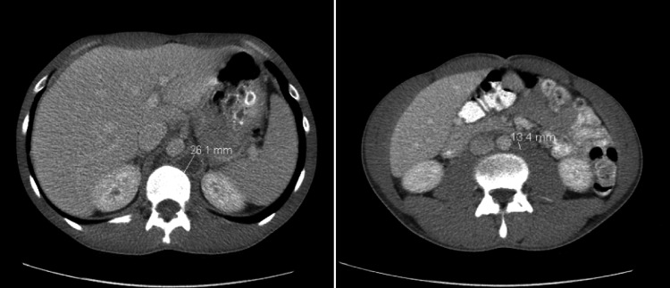
Achado: TC de abdome com linfonodos retroperitoneais aumentados (cerca de 26 e 13 mm), metástase de tumor germinativo. Observe que a doença subiu do escroto até o retroperitônio — é o destino exato da rota inguinal que a página ensina, e o motivo de a TC de abdome ser o exame que mira esse nível.
Shahrokh S et al., Cureus 2022;14(7):e26776, via PMC. CC BY 4.0. Ver fonte.
Quiz — fixação
A principal via de disseminação linfática do câncer de testículo leva primeiro aos linfonodos:
Gabarito: B. O tumor sobe pelo canal inguinal e drena para os linfonodos retroperitoneais — por isso a TC de abdome é o exame de estadiamento de escolha quando se suspeita de metástase. Só em estágio muito avançado chega ao supraclavicular. A (inguinais superficiais) é a drenagem da pele escrotal, não do testículo — pegadinha anatômica. C e D não são a rota inicial.
Por que cair na A: confunde-se a drenagem do escroto (pele → inguinal) com a do testículo (gônada → retroperitônio via canal inguinal). Essa distinção é justamente o que sustenta a via cirúrgica inguinal. Por que cair em C/D: mediastino/axila são drenagens de outros sítios; aqui o alvo é o retroperitônio.
O câncer de testículo dissemina-se preferencialmente pelo canal inguinal.
Verdadeiro. A rota de subida é o canal inguinal, daí para o retroperitônio e, em casos avançados, supraclavicular. Esse fato anatômico é a razão de a orquiectomia ser feita por via inguinal (alta), clampeando o cordão antes de manipular — para não semear o tumor.
Por que o "Falso" engana: o aluno pode achar que o testículo, estando no escroto, dissemina "pela bolsa". Mas embriologicamente a gônada vem do retroperitônio e mantém essa drenagem — por isso sobe pelo canal inguinal, não pela pele escrotal.
Página 6 / 12
HipoecogênicaHeterogênea (carne de peixe)Doppler · bilateral
Ultrassom: hipoecogênico e heterogêneo
Por que não retardar: tempo é testículo
A conduta inicial tem uma regra de ferro: nunca retardar o diagnóstico. Não se fica esperando o ultrassonografista chegar numa cidade pequena. Se o exame está disponível, ótimo — faz-se. Se não está, parte-se direto para o tratamento. Perder tempo é aumentar o risco de metástase. Por isso a propedêutica é enxuta e rápida: exame físico, ultrassonografia e marcadores tumorais — e cirurgia logo em seguida.
O que a USG mostra
A USG do tumor de testículo é clássica: uma lesão muito bem delimitada, hipoecogênica (escura, pouca ecogenicidade) e heterogênea — aquele aspecto "esquisitão" que lembra carne de peixe quando se abre a peça. Diferente da imagem calcificada e brilhante de um cálculo (litíase). E faz-se idealmente com Doppler, porque o aumento da vascularização também fala a favor de câncer. A USG é de bolsa escrotal/testicular bilateral — sempre se avalia o contralateral. Se a prova descreve "lesão bem delimitada, hipoecogênica e heterogênea", o diagnóstico está dado.
O ultrassom clássico. Lesão bem delimitada, escura (hipoecogênica) e de textura "esquisita" (heterogênea) — a tal "carne de peixe" — com vascularização ao Doppler. Clique, toque ou foque cada característica.
Clique numa característica
A lesão é escura, de textura granular e bem delimitada, com fluxo ao Doppler. Toque cada elemento para a leitura — e para a diferença em relação a cálculo e cisto.
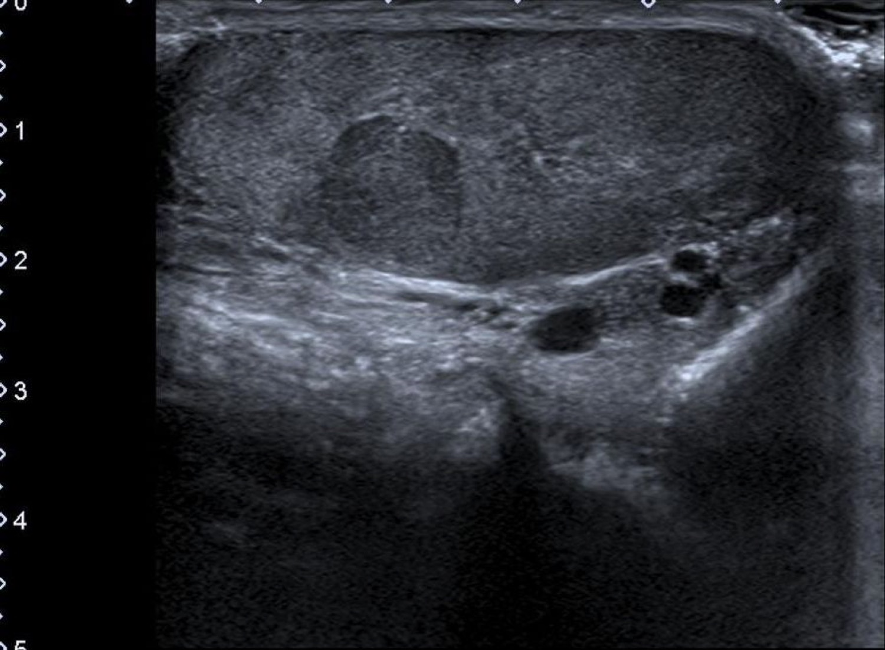
Achado: nódulo intratesticular hipoecogênico e bem delimitado à USG escrotal — o aspecto que, descrito no enunciado, já entrega o diagnóstico.
Jmarchn, via Wikimedia Commons. CC BY-SA 3.0. Ver fonte.
Quiz — fixação
O achado ultrassonográfico clássico do tumor de testículo é uma lesão:
Gabarito: B. O tumor aparece escuro (hipoecogênico), "esquisito" (heterogêneo) e bem delimitado, idealmente com aumento de vascularização ao Doppler. A (hiperecogênica/calcificada) descreve um cálculo. C (anecoica, paredes finas) descreve um cisto ou hidrocele simples — líquido, não tumor. D (isoecogênica) seria invisível, o que não corresponde à lesão clássica.
Por que cair na C: "anecoica" engana quem lembra de hidrocele/cisto — mas esses são líquidos benignos; o tumor é sólido e hipoecogênico. Por que cair na A: calcificação brilhante remete a litíase, não a neoplasia testicular.
Se o ultrassom não estiver prontamente disponível, justifica-se retardar o tratamento até realizá-lo.
Falso. O diagnóstico/tratamento nunca deve ser retardado — tempo perdido é risco de metástase. Se a USG ou o marcador não estão disponíveis, parte-se para a orquiectomia. A propedêutica ideal é USG + marcadores, mas ela não pode atrasar a cirurgia.
Por que o "Verdadeiro" engana: parece boa prática "confirmar antes de operar". Mas neste tumor a confirmação não pode custar tempo; a regra é não atrasar — daí o bordão "tempo é testículo".
Página 7 / 12
AFP só não-seminomaβ-hCG pode em ambosLDH inespecífico
Os três marcadores tumorais
AFP: a régua que separa os subtipos
Na avaliação inicial, pedem-se sempre os marcadores tumorais. O primeiro é a alfafetoproteína (AFP). Regra que não falha: a AFP está presente só nos tumores germinativos não-seminomatosos — em 60% a 80% deles — e nunca no seminoma. Então AFP elevada já diz que não é seminoma puro. Essa é a âncora dos marcadores.
β-hCG e LDH: cuidado com as exceções
O segundo é o β-hCG. Também mais comum no não-seminomatoso (20% a 40% dos casos), mas — atenção — pode estar presente no seminoma em até 15%. Ou seja: β-hCG não separa os subtipos como a AFP separa. O terceiro é a LDH, menos útil: aparece nos dois subtipos e é inespecífica (sobe em muitas outras situações). Serve mais para volume tumoral do que para definir tipo.
Pré e pós-op: a leitura prognóstica
E o uso mais importante dos marcadores é prognóstico. Comparam-se pré e pós-operatório. O ideal é que caiam (remissão) após a orquiectomia. Marcador que se mantém muito elevado depois da cirurgia — AFP ou β-hCG — fala a favor de mau prognóstico e de doença residual/metástase. Marcador já muito alto no pré-op também pesa contra. É essa leitura que dispara o estadiamento por imagem mais adiante.
O filtro dos marcadores. A AFP separa (nunca no seminoma); o beta-hCG não separa (pode nos dois); a LDH não decide nada sozinha. Clique, toque ou foque cada célula da matriz.
Clique numa célula
A célula vermelha (AFP × seminoma) é a âncora: AFP alta exclui seminoma puro. A âmbar (β-hCG × seminoma) é a pegadinha. Toque cada uma para o percentual e a regra.
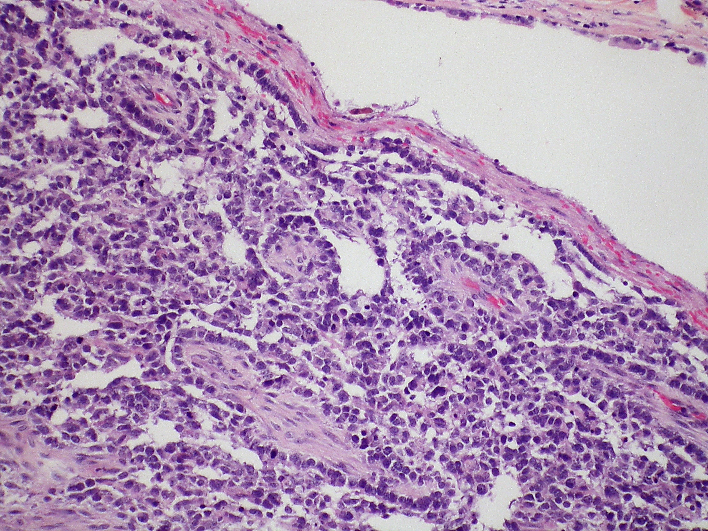
Achado: histologia (HE) de tumor do saco vitelínico, o componente germinativo não-seminomatoso que secreta AFP. É a fonte biológica do marcador: ver de onde a alfafetoproteína nasce explica por que ela jamais aparece no seminoma puro e por isso separa os subtipos.
Yale Rosen, via Wikimedia Commons. CC BY-SA 2.0. Ver fonte.
Quiz — fixação
Qual marcador, quando elevado, exclui o diagnóstico de seminoma puro?
Gabarito: A. A AFP nunca está elevada no seminoma puro — só nos não-seminomatosos. Logo, AFP alta exclui seminoma puro. B (β-hCG) não serve para isso: pode estar presente em até 15% dos seminomas. C (LDH) é inespecífica e ocorre em ambos. D (PSA) é marcador de próstata, não de testículo — distrator de outro órgão.
Por que cair na B: β-hCG também sobe no não-seminoma, então parece equivalente à AFP — mas a exceção do seminoma (até 15%) tira dele o poder de excluir. Por que cair na D: PSA é o marcador urológico mais famoso, e quem decora "marcador + urologia" o transfere por reflexo.
O β-hCG pode estar elevado tanto em tumores não-seminomatosos quanto em seminomas.
Verdadeiro. O β-hCG é mais comum no não-seminomatoso (20–40%), mas pode aparecer no seminoma em até 15% dos casos — por isso ele não separa os subtipos como a AFP. Essa é exatamente a pegadinha: a AFP é específica de exclusão; o β-hCG não.
Por que o "Falso" engana: quem decora "marcador de não-seminoma" como bloco assume que β-hCG e AFP se comportam igual. Mas só a AFP é fiel ao não-seminoma; o β-hCG vaza para o seminoma.
Página 8 / 12
Via inguinal (alta)Testículo + cordãoEscrotal = semeia metástase
"É um nódulo no testículo, faço a incisão direto na bolsa escrotal."
Esse é o erro que mata: manipular o tumor pela bolsa pode disseminar e aumentar a incidência de metástase. A via é inguinal, alta, clampeando o cordão antes de tocar no tumor.
Orquiectomia inguinal radical
A cirurgia padrão e por que pela via inguinal
A conduta-rainha — a que decide 80% das questões — é a orquiectomia inguinal radical: retirada do testículo junto com o cordão espermático, na altura do anel inguinal interno. A cura é altíssima: 80% a 90% dos casos. O acesso é por inguinotomia: pesca-se o cordão espermático, clampeia primeiro, antes mesmo de manipular muito o tumor, justamente para minimizar a chance de semear metástase.
O erro fatal: a via escrotal
Por que não fazer pela bolsa escrotal? Porque a manipulação do tumor pela via escrotal pode aumentar muito a incidência de metástase — e ainda contamina uma drenagem linfática diferente (a da pele escrotal, inguinal superficial), bagunçando o estadiamento. Por isso o acesso é sempre inguinal. É um item que a banca adora cravar: "tratamento inicial = orquiectomia inguinal radical com remoção do testículo e do cordão espermático" — e a alternativa errada é a que propõe incisão escrotal.
A exceção controversa: orquiectomia parcial
E a orquiectomia parcial? Existe, mas é altamente controversa e raríssima em prova de acesso direto. Só se aventa em situações específicas: tumores muito pequenos, testículo solitário ou tumores bilaterais. Fora disso, não aparece — a resposta é a inguinal radical.
Duas vias, um único certo. À esquerda, a inguinal: alta, clampeia o cordão antes de manipular. À direita, a escrotal: viola a bolsa e semeia o tumor. Clique, toque ou foque cada elemento.
Clique num elemento
À esquerda, em verde, a via inguinal e seus passos protetores; à direita, em vermelho, a escrotal e por que ela semeia. Toque cada elemento para o detalhe técnico.
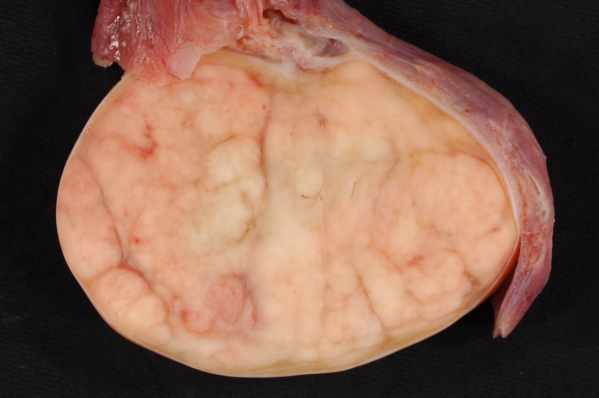
Achado: peça de orquiectomia inguinal radical de homem de 27 anos — testículo seccionado substituído por seminoma sólido e homogêneo de cerca de 7 cm.
Case courtesy of Ed Uthman, MD, via Wikimedia Commons. CC BY 2.0. Ver fonte.
Quiz — fixação
O tratamento inicial padrão de um tumor testicular suspeito é:
Gabarito: B. A via é inguinal (alta), retirando testículo + cordão espermático até o anel inguinal interno, com cura de 80–90%. A (biópsia transescrotal) e C (punção) são proibidas: manipular/violar a bolsa dissemina o tumor e aumenta metástase — o testículo não se biopsia pela bolsa. D inverte a ordem: opera-se primeiro; a QT entra na metástase.
Por que cair na A/C: o reflexo "achou massa → biopsia antes de tirar" é correto em quase todo órgão, mas no testículo a abordagem transescrotal é contraindicada — tira-se o testículo inteiro por via inguinal. Por que cair na D: confunde com tumores em que se reduz antes de operar; aqui a orquiectomia é o primeiro passo.
A orquiectomia pode ser realizada por via escrotal, desde que com técnica cuidadosa.
Falso. A via escrotal é contraindicada: a manipulação do tumor pela bolsa aumenta a incidência de metástase e altera a drenagem linfática esperada. A via correta é inguinal, clampeando o cordão antes de manipular. "Técnica cuidadosa" não corrige a via errada.
Por que o "Verdadeiro" engana: soa razoável que qualquer via "bem feita" sirva. Mas o problema não é técnica e sim rota: a escrotal viola compartimentos e semeia o tumor — por isso é proibida por princípio, não por habilidade.
Página 9 / 12
Cura 80–90%CisplatinaMetástase ≠ óbito
80–90%
A orquiectomia inguinal radical cura 80% a 90% dos casos. E quando há metástase, este tumor não é atestado de óbito — a quimioterapia à base de cisplatina muda o jogo.
Prognóstico e a cisplatina
Um tumor de altíssima cura
Vale fixar o tom otimista deste tumor: a cura é muito alta, 80% a 90% com a orquiectomia inguinal radical nos casos localizados. É um dos cânceres sólidos de melhor prognóstico justamente porque a cirurgia resolve a maioria e o seguimento por marcador pega cedo quem recidiva.
Metástase com boa resposta à cisplatina
E mesmo na metástase o paciente tem chance real. A quimioterapia à base de cisplatina tem ótima resposta no câncer de testículo — a ponto de transformar o prognóstico de doença disseminada. A USP já cobrou isso em acesso direto: diante de metástase, lembrar que cisplatina não deixa o paciente sem opção. Metástase aqui não é sinônimo de óbito.
Um câncer que se cura. Localizado, a cirurgia resolve 80 a 90%. Metastático, a cisplatina puxa o prognóstico de volta para o campo curável. Clique, toque ou foque cada cenário.
Clique num cenário
A barra verde (localizado) já está no campo curável; a vermelha (metástase) é puxada de volta pela seta da cisplatina. Toque cada elemento para o porquê.
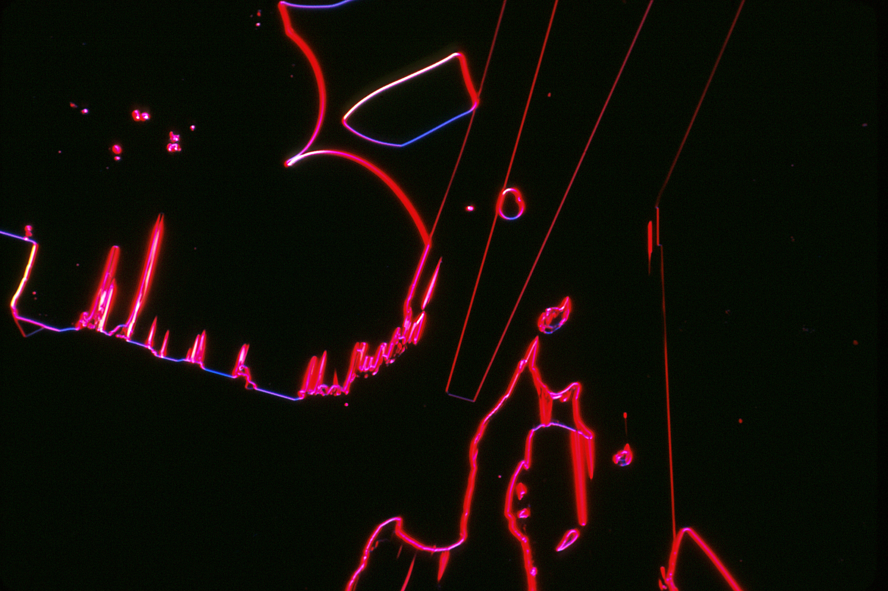
Achado: cristais de cisplatina, o quimioterápico de base à platina. Não é uma curva de sobrevida — é o fármaco em si, ancorando o conceito da página: o tumor germinativo é um dos sólidos mais quimiossensíveis, e é a cisplatina que transforma a metástase em doença ainda curável, sustentando os 80–90% de cura.
Larry Ostby, National Cancer Institute (NCI Visuals Online), via Wikimedia Commons. Domínio público. Ver fonte.
Quiz — fixação
Diante de câncer de testículo com metástase, a conduta que melhora substancialmente o prognóstico é:
Gabarito: B. A quimioterapia à base de cisplatina tem resposta excelente no tumor germinativo metastático — por isso metástase não significa óbito. A (paliação isolada) abandona um paciente potencialmente curável. C (RT escrotal) não é a abordagem da doença metastática e ignora a quimiossensibilidade. D (só observar) seria subtratar uma doença que responde à QT.
Por que cair na A: "metástase" dispara o reflexo de doença terminal — mas este é um dos tumores sólidos mais quimiossensíveis. Por que cair na D: observação com marcador serve a alguns estágios iniciais pós-orquiectomia, não à doença metastática estabelecida.
O câncer de testículo localizado tem alta taxa de cura com a orquiectomia inguinal radical.
Verdadeiro. A cura nos casos localizados é de 80% a 90% com a orquiectomia inguinal radical. É um dos cânceres sólidos de melhor prognóstico — o que torna ainda mais grave qualquer atraso ou via cirúrgica errada que comprometa esse resultado.
Por que o "Falso" engana: a palavra "câncer" puxa pessimismo automático. Mas aqui a estatística é favorável: a cirurgia, feita certo e a tempo, cura a grande maioria.
Página 10 / 12
Estadia após cirurgiaMarcador pós-opTC abdome se mantido
?
Por que, no câncer de testículo, o estadiamento por imagem costuma vir depois da cirurgia — e não antes?
Estadiamento: por que vem depois
Por que estadiar depois de operar
Aqui o tempo inverte a lógica habitual. Como não se pode perder tempo, a avaliação inicial é enxuta — USG + marcadores — e já se agenda a orquiectomia inguinal radical. O estadiamento vem depois da cirurgia. Operar não é "tchau e bença": o paciente segue em acompanhamento, sobretudo com dosagem de marcador tumoral pós-operatório. Se o marcador caiu como esperado, ótimo. Se não caiu, isso muda a investigação.
O que dispara a imagem (e qual imagem)
O que dispara a imagem de estadiamento é a suspeita de metástase — tipicamente o marcador que se manteve elevado após a cirurgia, ou o paciente que conviveu com a lesão por muito tempo antes de procurar ajuda. Nesse cenário, faz-se TC de abdome total com contraste (o retroperitônio é o alvo da drenagem). A TC/radiografia de tórax fica para casos selecionados, também guiada por elevação mantida de marcador. Em prova de acesso direto, o estadiamento detalhado raramente cai — mas a sequência "opera → mede marcador → se mantido, imagem" é o que se espera que você saiba.
A ordem invertida. Opera primeiro; o marcador pós-op decide o resto. Caiu, acompanha. Manteve, TC de abdome. Clique, toque ou foque cada decisão.
Clique numa decisão
O trilho parte da cirurgia, passa pelo losango do marcador e bifurca: verde (caiu, acompanha) ou coral (manteve, TC de abdome). Toque cada nó para a conduta.
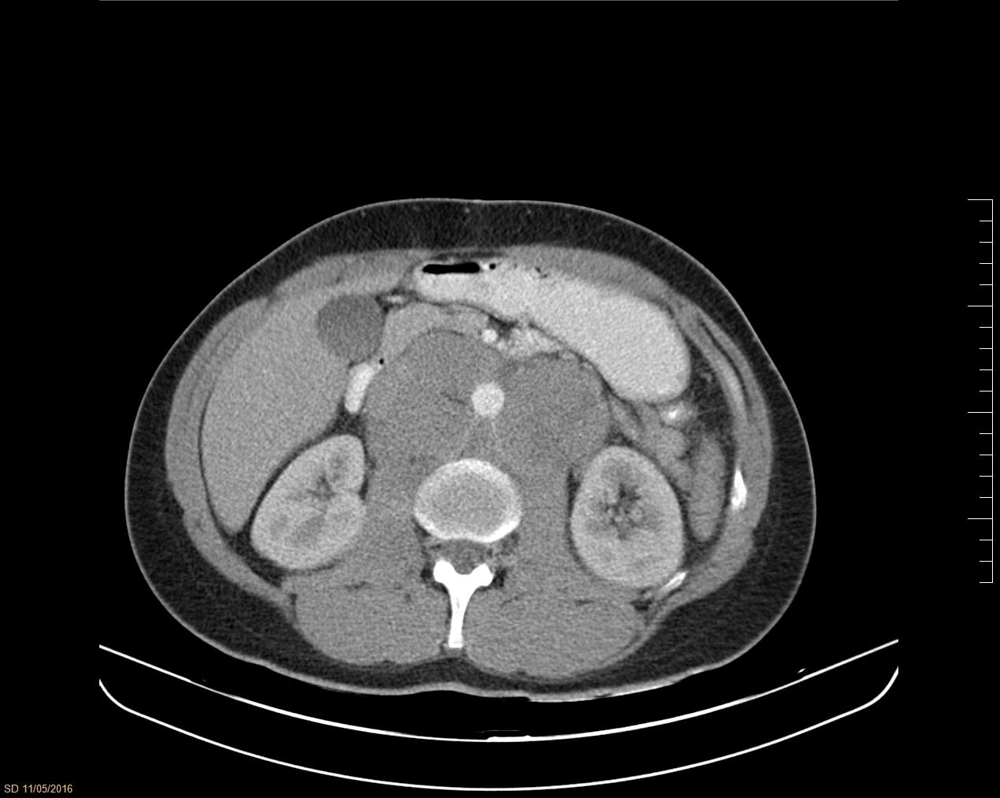
Achado: TC de abdome com linfadenopatia retroperitoneal peri-aórtica de seminoma. É exatamente o que a TC de estadiamento procura quando o marcador pós-operatório não cai: a massa de partes moles em volta da aorta confirma a doença residual e fecha o algoritmo "opera primeiro, estadia depois".
Jmarchn, via Wikimedia Commons. CC BY-SA 3.0. Ver fonte.
Quiz — fixação
O principal achado que indica TC de abdome com contraste para estadiamento no pós-operatório é:
Gabarito: B. O marcador (AFP/β-hCG) deveria cair após a retirada do tumor; se ele se mantém elevado, indica doença residual/metástase e dispara a TC de abdome com contraste, mirando o retroperitônio. A (dor da ferida) é esperada e não estadia nada. C (ginecomastia) reflete β-hCG passado, mas o que decide é a curva do marcador, não o sinal clínico isolado. D (idade) não indica imagem.
Por que cair na C: ginecomastia liga-se ao β-hCG e parece relevante — mas a decisão de imagem nasce do marcador não cair, não da mama. Por que cair na D: idade é fator de risco, não critério de estadiamento.
No câncer de testículo, o estadiamento por imagem costuma preceder a orquiectomia.
Falso. A ordem é invertida: por não se poder perder tempo, faz-se USG + marcadores e já se opera; o estadiamento detalhado vem depois, guiado pelo marcador pós-operatório. Esperar imagem completa antes de operar atrasaria o tratamento de um tumor de progressão rápida.
Por que o "Verdadeiro" engana: na maioria dos cânceres estadia-se antes de tratar. Este tumor é a exceção pedagógica — opera-se cedo e estadia-se depois, porque tempo é testículo.
Página 11 / 12
Torção: dor agudaOrquiepididimite: febre · PrehnRetrátil ≠ risco
Diagnósticos diferenciais
O que dói: torção e orquiepididimite
Os diferenciais que a banca arma giram em torno da dor — exatamente o que o câncer não tem. A torção testicular é dor muito aguda, de início súbito, com outros sinais — uma emergência. A orquiepididimite é um quadro inflamatório/infeccioso: dor, podendo vir com febre e manifestações sistêmicas, e com sinal de Prehn positivo (a dor alivia ao elevar o testículo). Se o enunciado descreve dor, febre ou alívio à elevação, o caminho não é câncer.
A pegadinha do testículo retrátil
E a armadilha mais elegante: o testículo retrátil. Ele desce e sobe, é extremamente benigno e não é fator de risco para câncer de testículo. Não confunda com a criptorquidia (o testículo que não desceu e fica retido), que é o grande fator de risco. A banca troca um pelo outro para ver quem decorou sem entender. Hérnia inguinal na infância e testículo retrátil não são fatores de risco; criptorquidia é.
O que dói não é câncer. Torção e orquiepididimite doem; o tumor não. E a armadilha final: criptorquidia é fator de risco, testículo retrátil não é. Clique, toque ou foque cada coluna.
Clique numa coluna
Duas colunas doem (torção, orquiepididimite); só o tumor é indolor (verde). A faixa de baixo separa criptorquidia (fator) de testículo retrátil (não-fator). Toque cada uma.
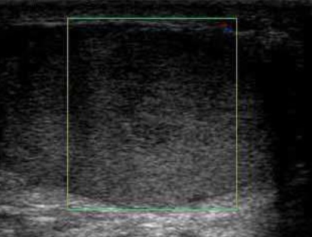
Achado: USG escrotal com Doppler de torção testicular — dentro da caixa colorida, ausência de fluxo intratesticular. É o contraponto do tumor (que é vascularizado ao Doppler): o diferencial que dói e que a banca usa para desviar do câncer mostra exatamente o sinal oposto na imagem.
Chee-Wai Mak & Wen-Sheng Tzeng (2012), via Wikimedia Commons. CC BY 3.0. Ver fonte.
Quiz — fixação
Qual condição NÃO é fator de risco para câncer de testículo?
Gabarito: C. O testículo retrátil — que desce e sobe — é extremamente benigno e não aumenta o risco. A pegadinha é trocá-lo pela criptorquidia (A), que é o grande fator de risco (4–6×). B (irmão, 8–12×) e D (tumor prévio, 12×) são fatores reais. Confundir retrátil com criptorquidia é o erro que a banca busca.
Por que cair na A: quem leu rápido funde "retrátil" e "criptorquídico" como sinônimos — mas só o que não desce (criptorquidia) é fator de risco. Por que cair em B/D: são fatores verdadeiros, então marcá-los como "não fator" inverte o gabarito.
Dor escrotal aguda com alívio à elevação do testículo (Prehn positivo) sugere câncer de testículo.
Falso. Dor aguda com Prehn positivo (alívio à elevação) sugere orquiepididimite, não câncer. O tumor é justamente indolor. A dor, a febre e o alívio à elevação são sinais dos diferenciais inflamatórios/torção — a banca usa a dor para desviar do câncer.
Por que o "Verdadeiro" engana: "testículo + sinal clínico com nome próprio" parece sofisticado e pró-câncer. Mas o Prehn positivo é marca de orquiepididimite; o câncer não dói e não tem Prehn.
Página 12 / 12
USG + marcadorOrquiectomia inguinalEstadia depois
Confira se você consegue, sem reabrir as páginas:
Reconhecer o gatilho (homem 20–40 anos, criptorquidia, massa indolor)
Separar AFP (nunca no seminoma) de β-hCG (pode em ambos)
Explicar por que o estadiamento vem depois e o que dispara a TC de abdome
Distinguir os diferenciais que doem (torção, orquiepididimite) e a pegadinha do testículo retrátil
Fechamento: a conduta que decide tudo
A questão que sintetiza tudo
Tudo converge para uma pergunta de conduta: diante de homem jovem com massa testicular indolor e criptorquidia, o que faço? USG (bilateral, com Doppler) + marcadores tumorais → orquiectomia inguinal radical, sem demora. O estadiamento vem depois, guiado pelo marcador pós-op. Essa sequência resolve 80% das questões. O resto — subtipo, marcador, prognóstico — orbita em torno dela.
A sequência que vence. Gatilho → USG + marcador → orquiectomia inguinal radical → estadiamento depois. Os dois selos são as questões reais. Clique, toque ou foque cada marco.
Clique num marco
A faixa verde é a conduta que vence; o marco da orquiectomia inguinal é a chave. Os dois selos âmbar são as questões reais (USP-RP, MP-PR) — toque cada um para o raciocínio resumido.
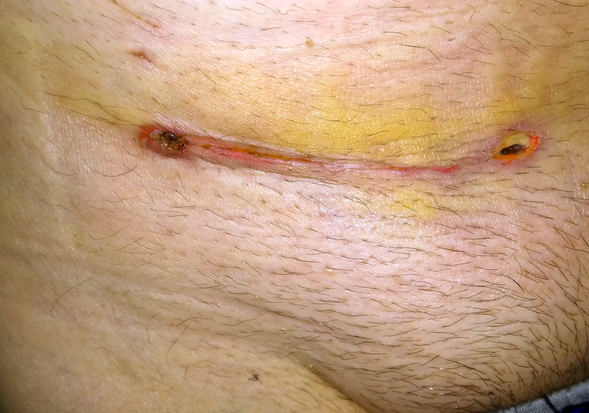
Achado: cicatriz de orquiectomia na região inguinal — incisão na virilha, não na bolsa escrotal. É a assinatura física da via inguinal radical: repare que a marca fica na prega da virilha, exatamente onde a aula martela que a cirurgia deve passar (e nunca pelo escroto, que semearia o tumor).
Frank Schwichtenberg, via Wikimedia Commons. CC BY-SA 4.0. Ver fonte.
Como as bancas cobram (USP-RP e MP-PR)
Veja como as bancas cobram. USP–Ribeirão Preto: homem de 22 anos, trauma escrotal leve há 40 dias, antecedente de criptorquidia, testículo aumentado, indolor, com nódulo endurecido. Suspeita e conduta? Neoplasia testicular → USG + dosagem de AFP e β-hCG. Os distratores trazem orquiepididimite e torção (que doem) e a alternativa de operar sem dosar marcador antes — quando o marcador está disponível, doso antes. MP–Paraná: a correta afirma que o tratamento inicial é a orquiectomia inguinal radical com remoção do testículo e do cordão espermático; as erradas dizem que a TC de bolsa escrotal é a investigação inicial (é a USG), que acomete a quarta década (é 20–40), que se associa a tabagismo (não há associação) e que testículo retrátil/hérnia inguinal são fatores de risco (não são — quem é fator é a criptorquidia).
Quiz — fixação
Homem de 22 anos, trauma escrotal leve há 40 dias, antecedente de criptorquidia, testículo esquerdo aumentado, indolor, com nódulo endurecido. Conduta inicial mais adequada:
Gabarito: B. O quadro é neoplasia testicular clássica (jovem, criptorquidia, massa indolor endurecida) — investigação inicial é USG escrotal + marcadores (AFP e β-hCG), seguida da orquiectomia. A erra na imagem (é USG, não TC, e antibiótico é para infecção, que aqui não há). C dispensa o marcador quando ele está disponível — opera-se, mas dosando antes se possível. D (observar) atrasa um tumor que não pode esperar.
Por que cair na A: "trauma há 40 dias" tenta sugerir infecção/hematoma — mas o intervalo longo e a massa indolor endurecida apontam tumor, e o exame é USG. Por que cair na C: o aluno lembra "não retardar" e pula o marcador — mas, disponível, o marcador é dosado antes da cirurgia.
Assinale a alternativa CORRETA sobre o câncer de testículo:
Gabarito: C. A via é inguinal, retirando testículo + cordão espermático. A erra o exame inicial (é a USG, não TC). B erra a faixa (pico 20–40, não "a partir dos 40"). D erra os fatores (retrátil e hérnia inguinal não são fatores; criptorquidia é). É a questão da MP–Paraná, e a chave é a via cirúrgica.
Por que cair na B: "quarta década" inclui 30–40, que toca a faixa real — mas o pico é 20–40 e a redação exclui a terceira década, tornando-a imprecisa. Por que cair na D: "testículo retrátil" é o irmão benigno da criptorquidia; quem não distingue marca como fator de risco e erra.